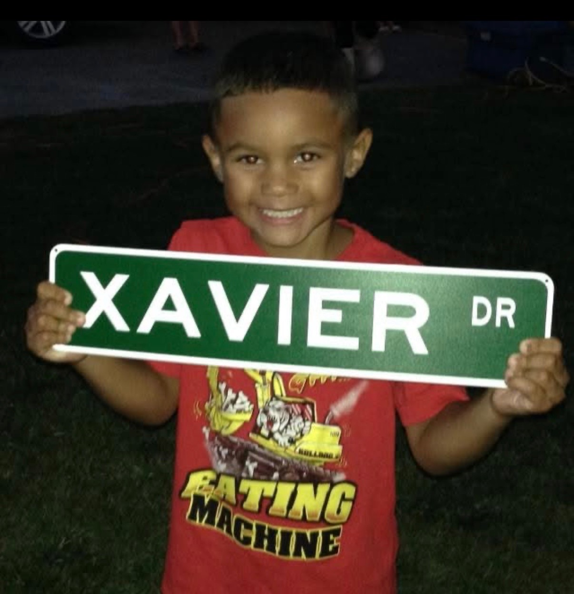

Growing up, I was always driven by an intense curiosity. My family always told me that we had to take ten-minute breaks in our car rides because I was asking too many questions about the trees, construction workers, and other elements of my physical environment. I wanted to learn more, do more, and push past the boundaries of whatever environment I found myself in. Though, when I entered high school and stepped into the Advanced Placement program, I quickly realized that the baseline standard for performance was exceptionally high. If I wanted to make an impact, I had to create my own edge.

Young Curious Xavier
Looking back, my leadership journey didn’t start with a grand, master-planned vision. It started in Grade 9, when I saw the opportunity to introduce something new to our extracurricular landscape through the Movie Club. If I am being completely honest, my initial motivation was just checking off a box. I hadn’t discovered a deep passion for institutional organization; I just wanted to build a space where students could destress, review notes, and study in a supportive environment, all while putting my name out there.
It worked as planned. That year, I was named Student of the Month five separate times and even received a standing ovation from the President’s Council. While the initial spark was about personal achievement, the experience unlocked something deeper within me. The validation from my peers and school community acted as a proof of concept. My physical environment proclaimed to me that my own edge was effective.
Riding that momentum, I ran for student government at the end of Grade 9 and was elected as the Community Relations and Mental Health Representative. I dove in headfirst, taking full initiative to plan and execute major school events like our Halloween initiatives. As the months went on, my excitement shifted into deep frustration. Looking at the student government framework from the inside, I identified two central operational flaws. The first one was extreme inefficiency. We would routinely spend two hours in meetings rambling about absolute nonsense. As someone who values optimized systems, watching hours slip away with zero concrete execution was incredibly draining. Next was the lack of true autonomy. The structure wasn’t genuinely student-led. Instead, we were largely just executing a pre-determined teacher agenda. Driven by a desire to fix these operational gaps, I ran for Vice President of the Student Council for my Grade 11 year on a strict platform of institutional change and structural turnaround.
I lost.
Hearing the results announced in front of the entire school was devastating. At that moment, it felt like a total dead end. At that point in my high school career, I thought I had lost my exponential growth. I considered getting involved outside the school community, however, I genuinely believed that getting into a serious leadership role outside the walls of my own school was an impossible task. Little did I know it wasn’t, and that loss became the ultimate catalyst.
In this pursuit, I discovered the Young Politicians of Canada. While I enjoyed debating and discussing governance, I wasn't entirely certain yet what my long-term career path would look like. What I did know was that I wanted to elevate my leadership. When the opportunity arose to launch a new municipal chapter, I seized it immediately. Around that same time, I had the privilege of attending the first Youth Model Parliament of Canada. Experiencing that formal, rigorous legislative process firsthand was an epiphany. I brought that model parliament framework back to my local community and built the chapter completely from ground up. I focused heavily on operational excellence, specifically through designing an active, high-growth social media presence that generated over 30,000 views, raising a significant amount of funds for the organization, and growing our membership to 50, all having active roles. Through consistent execution, our division became recognized as the leading chapter in the entire national organization. Due to this success, I was offered a prominent role on the National Executive team.
When the national offer came upon me, I faced a massive crossroad. YPC was an incredible organization, but I realized I couldn't ignore an underlying truth about myself.

YPC Launch Event
I am a builder.
I thrive when I have the autonomy to make precise decisions, solve structural problems, and execute a vision the right way from day one. I took a bold, calculated risk.I declined the national role, stepped away, and decided to build something entirely my own. With the counselling of a close friend, they provided their insights on my fantasy that became a reality.
That risk became The Young Constituents.
Using the foundational lessons of the model parliament framework, we launched TYC with a distinct, modernized vision. Today, we operate as a decentralized, federated democracy. We explicitly give our local and provincial chapters massive autonomy and independence because we believe local teams are best equipped to specialize in and address the unique issues within their own communities.
Looking ahead, my vision for The Young Constituents is for it to serve as the ultimate launchpad and hub for diverse youth to excel in their own development and reach their full potential. My goal wasn’t to build a rigid, top-down hierarchy, but to build a flexible system that evolves alongside changing ideas and ideologies. Building a system that truly represents the modern generation. My role as founder isn’t to command, but it is to support, empower, and accelerate the drive and ambition of any TYC Member.
TYC Event
In the end, if this journey has taught me anything, it's that true success isn't measured by a title, a CEO designation, or an organizational chart. The greatest gift of TYC has been the extraordinary network of people it has brought together. Every single day, I get to collaborate with my brilliant peers from completely different walks of life across multiple provinces. We have members focused on high finance and business, others driven by political science, and changemakers looking to revolutionize healthcare and technology. Together, we have built a collaborative ecosystem where youth can share their struggles, celebrate their wins, navigate their losses, and amplify each other's stories. Objectively managing a national youth organization is an incredible milestone, but being the daily steward of a multidisciplinary, supportive community of future leaders is the honor I am most grateful for.
Xavier Davis, The Young Constituents